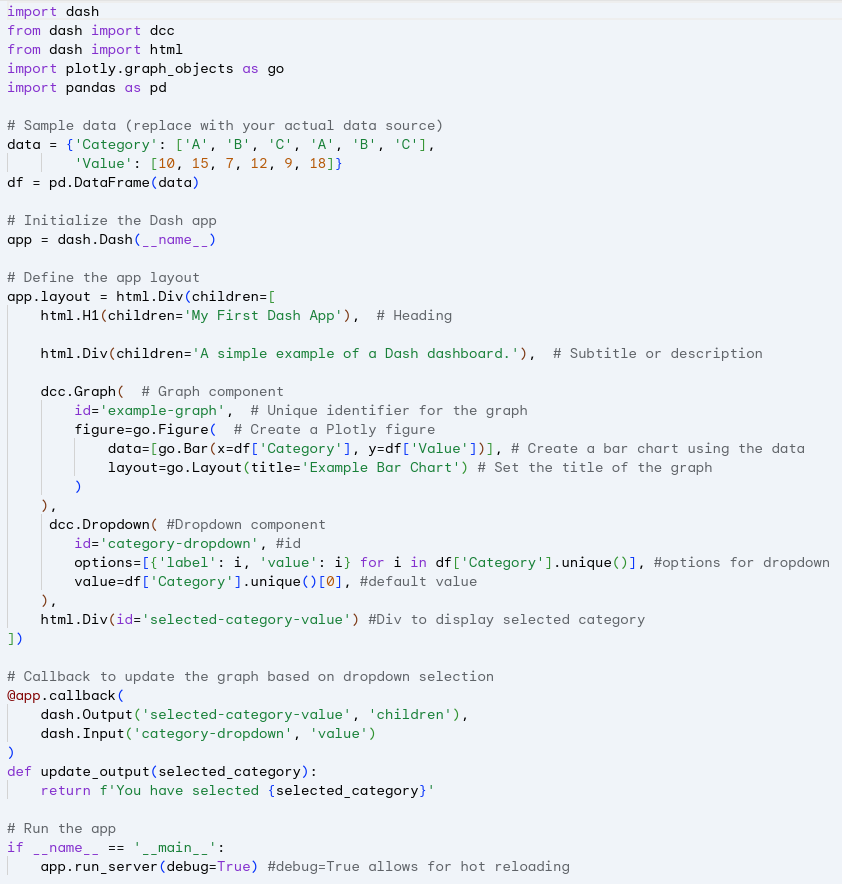

Unleashing Business Intelligence with Python
Shifting from Drag-and-Drop BI Tools to Code-based Applications
May, 2025
Jesus L. Monroy
Economist & Data Scientist

No-Code Stage: Combining SQL and Tableau
A Winning Combination and the next step to BI as Code. In the world of data analysis and visualization, Tableau has established itself as a powerful tool for transforming numbers into impactful visual insights. However, the way we feed those dashboards has a significant impact on their performance, flexibility, and scalability. Here’s why using SQL to prepare your data before bringing it into Tableau is a superior strategy.
Why SQL as a Paintbrush for Your Tableau Dashboards?

Imagine Tableau is your canvas and the data is the paint. SQL acts as your expert color mixer, allowing you to prepare exactly the shades and proportions you need before applying them to the canvas. Here are some of the key benefits:
Optimized Performance
Instead of loading large amounts of raw data into Tableau and relying on its data engine to perform complex transformations, SQL lets you filter, aggregate, and transform data directly in the database. This means Tableau works with much smaller, optimized data sets, resulting in faster and more responsive dashboards.
Greater Flexibility and Control
SQL gives you granular control over your data transformation logic. You can perform complex joins, apply conditional logic, create calculated fields, and shape the data exactly as you need it for your specific visualizations. This is much more flexible than relying solely on Tableau’s capabilities for these tasks.
Reuse and Consistency
SQL queries can be saved, versioned, and reused across multiple dashboards or even different tools. This promotes consistency in business logic and reduces work redundancy.
Scalability
As your data volumes grow, performing heavy transformations within Tableau can become prohibitively expensive in terms of performance. Delegating these tasks to the database via SQL allows your solution to scale more efficiently.
Data Warehouse Integration
If your organization already uses a data warehouse, SQL is the native language for interacting with it. Using SQL to prepare data for Tableau integrates naturally with your existing data infrastructure.
The Ideal Workflow: SQL First, Tableau Later
An efficient workflow involves:
Connecting Tableau to the database
Using custom SQL queries or materialized views to prepare and shape the data. This includes filtering, aggregations, joins, and any other necessary transformations.
Building visualizations
Using Tableau drag and drop from the pre-processed data.
Shifting to BI as Code: Evidence.dev
While the combination of SQL and Tableau is powerful, modern tools like Evidence.dev are emerging as interesting alternatives that seek to further simplify the process of creating data-driven dashboards.

SQL as the Primary Language
Similar to the strategy we promote, Evidence.dev uses SQL as its primary language to define data logic and visualizations. This means there’s less of a clear separation between data preparation and visualization.
Code-Defined Visualizations
Visualizations in Evidence.dev are defined using code (primarily Markdown with SQL code blocks), which offers even greater control and facilitates collaboration and versioning through systems like Git.
Integrated Pipeline
Evidence.dev essentially integrates the data pipeline and visualization into a single tool. You don’t need a separate tool like Tableau for visualization after preparing the data with SQL.
Focus on Data Engineering
Evidence.dev is more aligned with data engineering principles, promoting transparency, reproducibility, and maintainability in the dashboard creation process.
Replacement or Integration?
While Evidence.dev offers an attractive alternative, it doesn’t necessarily have to be a complete replacement for the SQL + Tableau combination in all cases.
Potential Replacement
For teams with a strong focus on data engineering and who value full control through code, Evidence.dev could be an excellent option to replace the traditional SQL + Tableau workflow.
Strategic Integration
It is also possible to integrate Evidence.dev into an existing Tableau workflow. For example, data models defined and transformed in Evidence.dev could be used as data sources for Tableau dashboards, leveraging the strengths of both tools.
Unleashing the Power of Python as BI as Code: Plotly Dash
Tired of static reports and clunky spreadsheets? Want to transform your data into engaging, interactive stories? Look no further than Plotly Dash, a powerful Python framework for building analytical web applications –no web development expertise required!
Dash empowers data scientists and analysts to create beautiful, responsive dashboards directly from their Python scripts. Imagine effortlessly turning your data insights into shareable web applications that anyone can explore and understand.
Why Choose Plotly Dash for Your Dashboards?
Dash offers a compelling set of advantages that make it a go-to choice for building data dashboards:
Python Native
Built entirely on Python, Dash seamlessly integrates with your existing data science stack, including libraries like Pandas, NumPy, and Scikit-learn. This means you can leverage your familiar Python workflows to build sophisticated dashboards.
Interactive and Dynamic
Dash dashboards are inherently interactive. Users can filter data, zoom into charts, hover over data points for details, and trigger updates in real-time. This level of engagement fosters deeper data exploration and understanding.
Declarative Syntax
Dash utilizes a declarative syntax, making it incredibly intuitive to define the layout and interactivity of your dashboard. You describe what you want to see, and Dash handles the underlying complexities of building the web application.
Rich Component Library
Plotly provides a comprehensive library of interactive and customizable components, including charts, graphs, tables, dropdown menus, sliders, and more. These components are built on top of the robust Plotly.js library, ensuring high-quality visualizations.
Customizable Layouts
Dash offers flexible layout options, allowing you to arrange components precisely as needed. You can create multi-page dashboards, organize elements into rows and columns, and design visually appealing interfaces.
Deployment Flexibility
Dash applications can be deployed on various platforms, from local machines to enterprise-level servers and cloud platforms like Heroku, AWS, and Google Cloud. This makes it easy to share your dashboards with a wider audience.
Active Community and Extensive Documentation
Dash boasts a vibrant and supportive community, along with comprehensive and well-maintained documentation. This makes it easier to learn, troubleshoot, and find solutions to your dashboarding challenges.
Recent Improvements and Exciting Features
The Plotly Dash ecosystem is continuously evolving, with recent updates bringing even more power and flexibility:
Pattern-Matching Callbacks
This feature simplifies the creation of dashboards with dynamically generated components, making it easier to handle scenarios with a variable number of inputs or outputs.
Clientside Callbacks (with JavaScript)
While Dash is primarily Python-based, the introduction of clientside callbacks allows developers to write JavaScript code for specific interactive elements, leading to faster and more responsive user experiences for certain interactions.
Improved Performance
Ongoing efforts focus on optimizing the performance of Dash applications, ensuring smoother interactions and faster loading times, especially for large datasets.
Enhanced Theming and Styling
Recent updates have brought more options for customizing the visual appearance of Dash applications, allowing for greater control over branding and aesthetics.
Integration with More Tools
Dash continues to improve its integration with other data science and web development tools, expanding its versatility.
Getting Started with Plotly Dash
Diving into Plotly Dash is easier than you might think!

From there, you can explore the official Dash documentation and numerous online tutorials to start building your own interactive dashboards.
Craft Interactive Dashboards with Shiny for Python ✨
Ready to transform your raw data into compelling, interactive stories? Look no further than Shiny for Python! This powerful library brings the magic of reactive web applications directly to your Python workflow, making dashboard creation more intuitive and accessible than ever before.
For those familiar with the R ecosystem, Shiny needs little introduction. Now, Pythonistas can leverage its elegant framework to build dynamic dashboards without needing extensive web development knowledge. Imagine: interactive charts that respond to user inputs, filterable tables that reveal hidden insights, and customizable layouts that perfectly showcase your findings –all built with the Python you already know and love.

Why Choose Shiny for Python? Let’s Dive into the Advantages
Python Powerhouse
You can seamlessly integrate your favorite Python data science libraries like Pandas, NumPy, Matplotlib, Seaborn, and Plotly directly into your dashboards. This means you can perform complex data manipulation and visualization within the same familiar environment.
Reactive Magic
Shiny’s core strength lies in its reactivity. When a user interacts with an input (like a slider or dropdown), the linked outputs (charts, tables, text) automatically update in real-time. This creates a fluid and engaging exploratory experience for your audience.
Simplified Web Development
Say goodbye to wrestling with HTML, CSS, and JavaScript intricacies. Shiny for Python abstracts away much of this complexity, allowing you to focus on the logic and presentation of your data. Its declarative syntax makes defining UI elements and their behavior remarkably straightforward.
Customizable Layouts
Tailor your dashboards to your exact needs with flexible layout options. Arrange elements in columns, rows, or use more advanced grid systems to create visually appealing and informative interfaces.
Shareability
Once your dashboard is built, deploying it is relatively simple. You can share it with colleagues, stakeholders, or even the wider world, enabling data-driven decision-making and communication.
Growing Ecosystem
While still relatively new compared to its R counterpart, the Shiny for Python ecosystem is rapidly expanding. Expect to see more components, extensions, and community support emerge over time.
What’s Improved? Building on the Shiny Legacy
Shiny for Python benefits from the years of experience and refinement of its R predecessor. This translates to:
Modern Pythonic Syntax
The Python API is designed to feel natural and intuitive for Python developers.
Leveraging Python’s Strengths
It seamlessly integrates with Python’s rich ecosystem for data manipulation, scientific computing, and visualization.
Cross-Platform Compatibility
Deploy your dashboards on various operating systems and environments.
If you’re eager to jump in, here’s a taste of how simple it can be:

This minimal example demonstrates how to create a simple dashboard with a dropdown to filter a bar chart.
Conclusions
Using SQL to prepare your data before visualizing it in Tableau is a smart strategy that leads to faster, more flexible, and scalable dashboards. Emerging tools like Evidence.dev are taking this philosophy a step further by integrating data preparation and visualization into a SQL-based environment. Evaluating the specific needs of your team and project will help you determine if the traditional SQL + Tableau combination is still the best option or if a modern alternative like Evidence.dev could offer significant advantages. The power of your data is in how you prepare it!
Plotly Dash has emerged as a leading framework for building interactive data dashboards in Python. Its Python-native nature, rich component library, and focus on interactivity make it an ideal choice for data professionals looking to communicate their insights effectively. With continuous improvements and a thriving community, Dash is only getting better, empowering you to unlock the true potential of your data.So, why settle for static reports? Embrace the power of Plotly Dash and start building dynamic, engaging dashboards today!
The Future is Shiny!
Shiny for Python opens up exciting possibilities for data scientists, analysts, and anyone who wants to communicate data effectively. Its ease of use, combined with the power of Python’s ecosystem, makes it a compelling choice for building interactive and insightful dashboards.
References
- Monroy, J. (2025) . Retrieved from website.
- Monroy, J. (2025) Building Effective Dashboards for the Modern Data Scientist. Retrieved from website.
- Monroy, J. (2025) Business Intelligence as Code. Retrieved from website.
- Dash Website Dash Python User Guide. Retrieved from website.
- Shiny Website Shiny for Python. Retrieved from website.
Contact
Jesus L. Monroy
Economist & Data Scientist